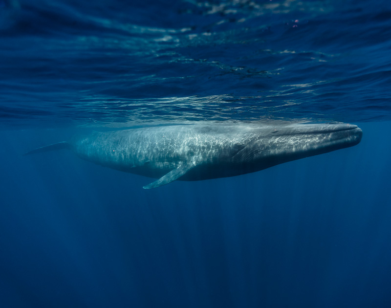
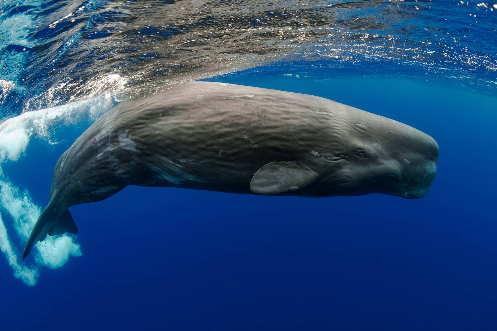

El mundo animal es muy
variado y espectacular también
El fondo de nuestros océanos está lleno de
especies asombrosas, muchas de ellas consideradas
los animales marinos más grandes del mundo. Seguramente
haya oído hablar de especies que cuesta creer que sean
reales, como el calamar gigante u otros animales acuáticos
que han inspirado películas de terror, como la mítica “Tiburón”,
en la cual aparece el tiburón blanco. Si quiere conocer cuáles son
los 5 animales marinos más grandes del mundo , las dietas de esos animales marinos y
sus habitat correspondientes preste atención.
Ballena azul

Esta lista merece empezarse con la ballena azul La ballena azul antártica (Balaenoptera musculus Intermedia) es el
animal más grande del planeta. Llega a pesar hasta 400,000 libras (180 ton) o el equivalente a unos 33 elefantes y medir
unos 98 pies (29 m) de largo. Su corazón es del tamaño de un automóvil pequeño y durante la temporada principal de alimentación
puede consumir alrededor de 7,936 libras (3,600 kg) de krill por día. Además, es el animal más ruidoso de la Tierra, incluso más ruidoso
que un motor a reacción: sus cantos alcanzan los 188 decibeles mientras que el ruido de un jet llega a los 140 decibeles. El silbido de baja
frecuencia que emiten las ballenas puede escucharse a cientos de millas
y probablemente es utilizado para atraer a otras ballenas azules.
HABITAT
La ballena azul, también conocida como rorcual azul, habita en todos los océanos del mundo. Realiza grandes migraciones, viajando en verano a las zonas polares para alimentarse, y retornado hacia latitudes más bajas cercanas al ecuador cuando se acerca el invierno.
Es en este período, en aguas más cálidas, cuando da a luz. Sus rutas se basan, por tanto, en la temperatura de los océanos.
Son unas gráciles nadadoras, pudiendo alcanzar velocidades cercanas a los 27 nudos cuando se sienten amenazadas. Además, suelen vivir solas o en parejas, aunque en ocasiones se pueden encontrar en pequeños grupos.
DIETA
El alimento favorito de la ballena azul es el krill, un pequeño crustáceo cuya longitud oscila entre los 3 y 5 centímetros, de hecho, diariamente una ballena es capaz de consumir 3,5 toneladas de krill, aunque también se alimenta de múltiples formas de vida de pequeño tamaño que habitan en el océano.
Otro alimento que resulta exquisito para la ballena azul y que ésta tiende a buscar son los calamares, aunque también es cierto que sólo los come cuando éstos se encuentran en número abundante.
Aproximadamente una ballena azul ingiere 3.628 kilogramos de comida diariamente.
Aparte de eso las crias de ballenas tras haberse gestado durante un año aproximadamente en el útero de su madre, requiere prácticamente todo el tiempo de ésta, ya que
en un día consumirá aproximadamente entre 100 y 150 litros de leche materna.
Cachalote

Otro ejemplo de animal marino que hemos conocido a través de la cultura popular
es el cachalote (Physeter macrocephalus), ya que es el protagonista de la
película “Moby Dick”. Esta especie es la más grande en cuanto a ballenas
dentadas se refiere y, además, ostenta el galardón de ser el animal con
los dientes más grandes que existen. Este animal marino da a luz a una
sola cría cada tres a seis años, cuyo cuidado se prolonga más de una década.
Son animales longevos, pudiendo alcanzar perfectamente los setenta años.
HABITAT
El cachalote vive en las aguas marinas de todo el planeta, aunque no se
asocia a zonas heladas. Su distribución se extiende tanto en mares y océanos
abiertos como en mares parcialmente cerrados como en el Mediterráneo,
el mar de Okhotsk, el golfo de Méjico y el golfo de California.
DIETA
Alrededor del 90 % de la dieta del cachalote está compuesta por calamares medianos y gigantes. El 10 % restante es una mezcla de tiburones, pulpos, crustáceos y rayas.
Este gran mamífero marino requiere al menos un 3% de su peso a diario para su dieta. Estas ballenas espermaceas eligen comer cerca del borde de la plataforma continental. Lo hacen puesto que las corrientes oceánicas traen gran cantidad de especies marina lista para cazar.
Para obtener su alimento los cachalotes se sumergen de 800 a 1000 metros de profundidad. En ocasiones pueden alcanzar una profundidad de 3000 metros tardando una hora cazando a su presa.